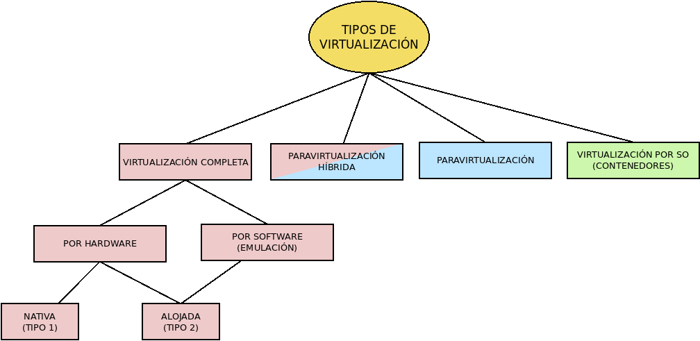
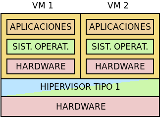
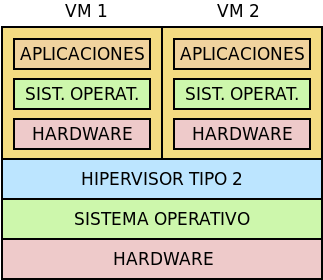
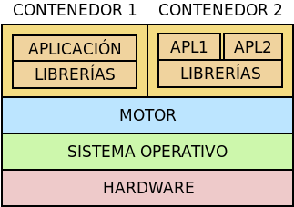

9.2.1. Introducción¶
Dado nuestro propósito, centraremos el resto del epígrafe en la virtualización de plataforma cuyos tipos pueden resumirse en el siguiente esquema:
Antes de empezar, no obstante, hay que introducir cuatro conceptos:
Máquina virtual, que es el sistema informático virtualizado, esto es, el conjunto de un hardware virtual, un sistema operativo y las aplicaciones que corren sobre ellos.
Hipervisor, que es la plataforma software que controla la virtualización de las distintas máquinas virtuales.
Sistema anfitrión, que es aquel sobre el que se realiza la virtualización.
Sistema huésped, que es aquel que se ejecuta dentro de la máquina virtual.
- Virtualización completa
Es aquella en la que se virtualiza por completo para el huesped una plataforma hardware funcional, por lo que el huésped debe ser tan sólo capaz de utilizar los componentes de esa plataforma, esto es, tener los drivers adecuandos para todos ellos. Normalmente el hardware que se virtualiza con componentes reales comúnmente utilizados por lo que es bastante probable que el sistema huésped disponga de los drivers apropiados.
Dentro de la virtualización completa, podemos hacer dos distinciones. La primera hace referencia al tipo de hipervisor:
Virtualización nativa o hipervisor de tipo 1: es aquella en que el hipervisor se ejecuta directamente sobre el hardware.
Virtualización alojada o Hipervisor de tipo 2: es aquella en que el hipervisor se ejecuta sobre un sistema operativo.

La nativa es más eficiente que la alojada, ya que el proceso de virtualización se ahorra la intermediación del sistema operativo.
Por otro lado, a partir del año 2005 las plataformas x86_641 empezaron a incluir en sus procesadores instrucciones que ayudan en la virtualización de hardware de la misma plataforma (VT-x en procesadores Intel y AMD-V en procesadores AMD), a fin de que los sistemas huéspedes pudieran ejecutar instrucciones directamente sobre el procesador sin afectar al anfitrión. Esto da lugar a otra clasificación:
Virtualización acelerada por hardware, que es aquella que permite a los sistemas huéspedes ejecutar instrucciones privilegiadas sobre el hardware real, siempre que este lo soporte. Obviamente, se debe virtualizar un hardware del mismo tipo.
Emulación, que es aquella en que la virtualización del hardware se realiza toda mediante software. Esto es mucho menos eficiente que la aceleración por hardware.
- Paravirtualización
Es aquella en la que no se construye para el huésped un hardware virtual, ya que este tiene los controladores adecuados para hacer las peticiones directamente al anfitrión. Ello requiere modificar el sistema operativo cliente para incorporar estos controladores. Evitando la virtualización del hardware se mejora el rendimiento, pero a costa de no poder usar cualquier sistema operativo, sino sólo aquellos previamente preparados para su paravirtualización.
- Paravirtualización híbrida
Es una solución a caballo entre las dos anteriores en que se usa paravirtualización exclusivamente para algunos aspectos del hardware que sea especialmente costoso virtualizarlos como operaciones de E/S y uso intensivo de memoria, y para el resto se usa virtualización completa del hardware.
Un ejemplo de hardware paravirtualizado es el driver virtIO para las tarjetas de red, que puede ser usado en sistemas de virtualización completas como Virtualbox o QEmu.
- Contenedores
La virtualización por sistema operativo la llevan a cabo aquellos sistemas operativos capaces de crear varios espacios de usuario completamente aislados unos de otros. Cada uno de estos espacios de usuario constituye un contenedor y es capaz de ver y manejar aquellos recursos hardware que se le han asignado.
En consecuencia, en este tipo de virtualización no existe ni hardware virtual, ni sistema operativo huésped, sino sólo aplicaciones (de base o de usuario) que corren dentro del contenedor.
Dentro de esta virtualización, podemos distinguir dos clases:
Contenedores de sistema que son aquellos contenedores dentro de los cuales se virtualiza un sistema operativo casi completo, aunque el kernel sea el del anfitrión. En realidad, lo que hacen es proporcionar en el huésped un espacio de usuario coompleto y aislado del anfitrión. Proporcionan, pues, una gestión del huésped muy próxima a la de la virtualización completa.
Contenedores de aplicación que con son aquellos contenedores destinados a ejecutar un única aplicación aislada2. Es una virtualización muy en boga en los últimos tiempos, sobre todo a partir de la irrupción de Docker.
Ver también
Para un explicación más exahustiva de estas dos clases, puede leer el artículo Operating System Containers vs. Application Containers.
Las ventajas fundamentales de este sistema son su rendimiento y su pequeño consumo de recurso frente a las soluciones anteriores. Por contra, tiene la desventaja de que al no existir un sistema operativo huésped, las aplicaciones huéspedes deben ser aplicaciones hechas para el sistema operativo anfitrión, o lo que es lo mismo, para docker en Linux sólo podremos aislar aplicaciones hechas para Linux.

Software |
Tipo |
Aceleración |
Anfitrión |
Huésped |
Licencia |
||
|---|---|---|---|---|---|---|---|
CPU |
SO |
CPU |
SO |
||||
VMware Workstation |
Completa tipo 2 |
Sí |
x86
x86_64
|
Windows
Linux
|
Anfitrión |
* |
Propietaria (freeware) |
Virtualbox |
Windows
Linux
MacOs
FreeBSD
|
GPL |
|||||
Parallel |
MacOs |
Propietaria |
|||||
VMware ESXi |
Completa tipo 1 |
- |
Propietaria |
||||
KVM3 |
x86
x86_64
IA-64
ARM
PowerPC
|
Linux
FreeBSD
|
GPL |
||||
Hyper-V |
x86_64
|
Windows |
Propietaria |
||||
QEmu |
Completa tipo 2 |
No4 |
x86
x86_64
IA-64
ARM
PowerPC
MIPS
SPARC
|
Linux
FreeBSD
Windows
MacOs
FreeBSD
OpenBSD
Solaris
|
* |
* |
GPL |
Xen Project5 |
Completa
Paravirt.
Paravirt. híb.
Contenedor
|
Sí |
x86
x86_64
PowerPC
ARM
|
Linux |
Anfitrión |
* |
GPL |
OpenVZ |
Contenedores de sistema |
- |
x86
x86_64
IA-64
PowerPC
SPARC
|
Linux |
Anfitrión |
- |
GPL |
Docker |
Contenedores de aplicación |
- |
x86_64
ARM
|
Linux
Windows
MacOs
|
Anfitrión |
- |
Apache (tipo BSD) |
LXC |
Contenedores de sistema |
- |
x86_64
ARM
|
Linux |
Anfitrión |
- |
GPL |
Notas al pie
- 1
Más recientemente la incluyó también la plataforma ARM.
- 2
Entiéndase que en, este caso, aislada no significa que no pueda comunicarse con el exterior, sino que se ejecuta en un espacio de usuario independiente.
- 3
KVM es un módulo de Linux que usa como interfaz una versión modificada de QEmu.
- 4
En arquitecturas x85 y x86_64 sí puede habilitarse la aceleración por hardware.
- 5
Xen ofrece distintas técnicas de virtualización dependiendo de cuál sea el sistema operativo huésped.